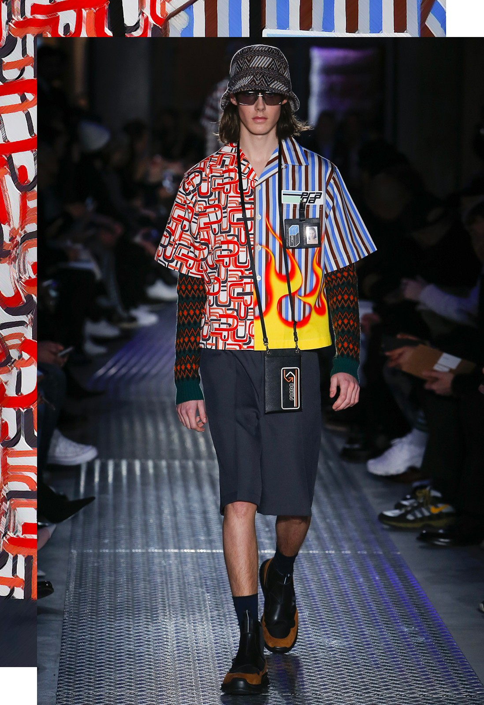

Types of Street Style
1. Skatewear
Skateboarding culture all across the world helped to popularise this particular clothing. It has its roots in California, the place where the skate culture first emerged. Items like baseball caps, beanies, flannels, skate sneakers, and wide-leg shorts are staples of this subculture's clothing. These designs are available from several manufacturers, including Vans, Stussy, and Tilly's.
2. Techwear
This fashion focuses on both style and usefulness. It fashions items like cargo pants and military vests using luxurious textiles. These clothes are available from companies like Adidas and Nike.
3. Hypebeasts
This is a style that is mainly promoted by celebrities. There are several brands of Hypebeasts, such as Prada, Balenciaga, Supreme, and Gucci.
4. Athleisure
Athletic clothing that is worn casually for lifestyle purposes. Running shoes, twill joggers, sweatshirts, tapered sweatpants, and other athletic accessories are included in this wardrobe. Chunky shoes and biker shorts have been two major Athleisure fashion mainstays in recent years. Celebrities like the Kardashians and Jenners, Hailey Bieber, and others have helped to make this look fashionable. A number of companies, like Fashion Nova and Balenciaga, have catered to this particular trend.